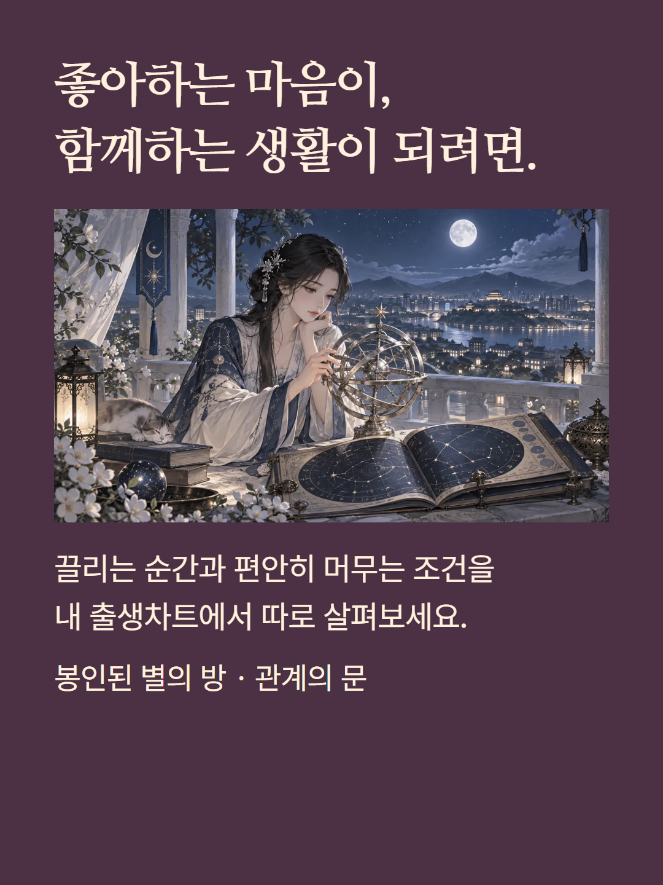
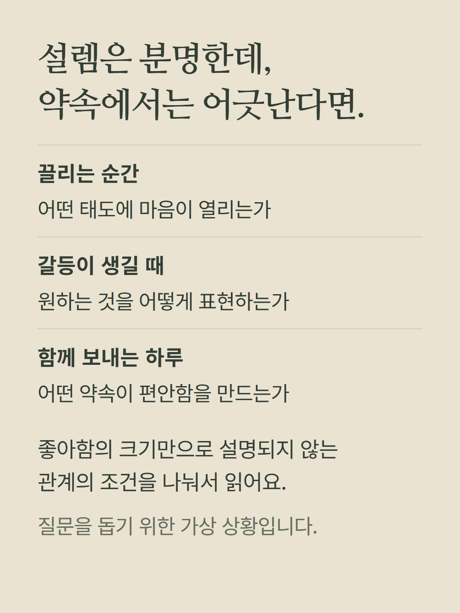
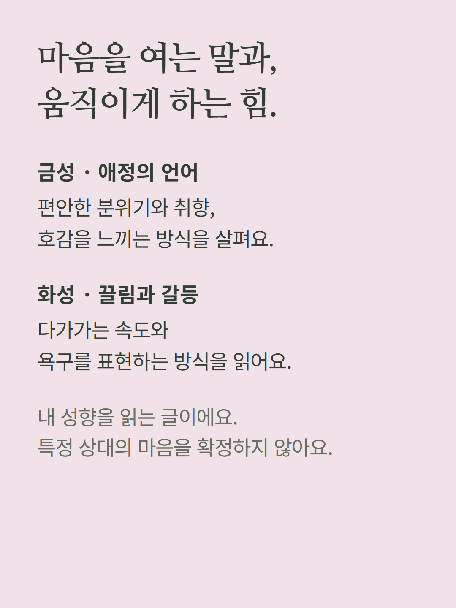
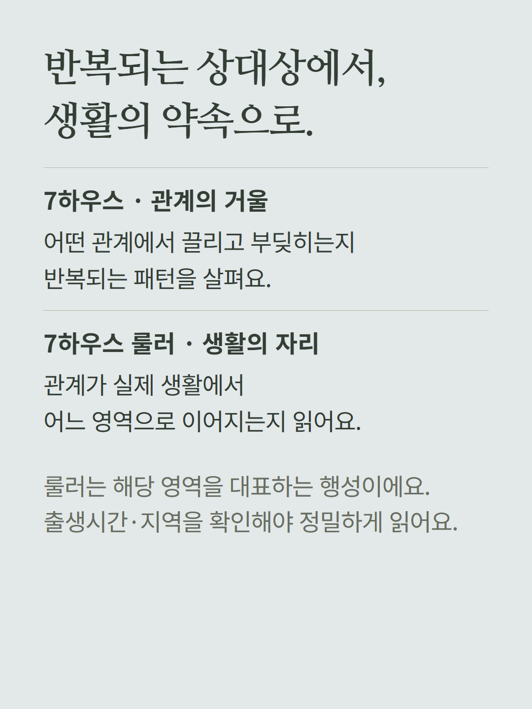
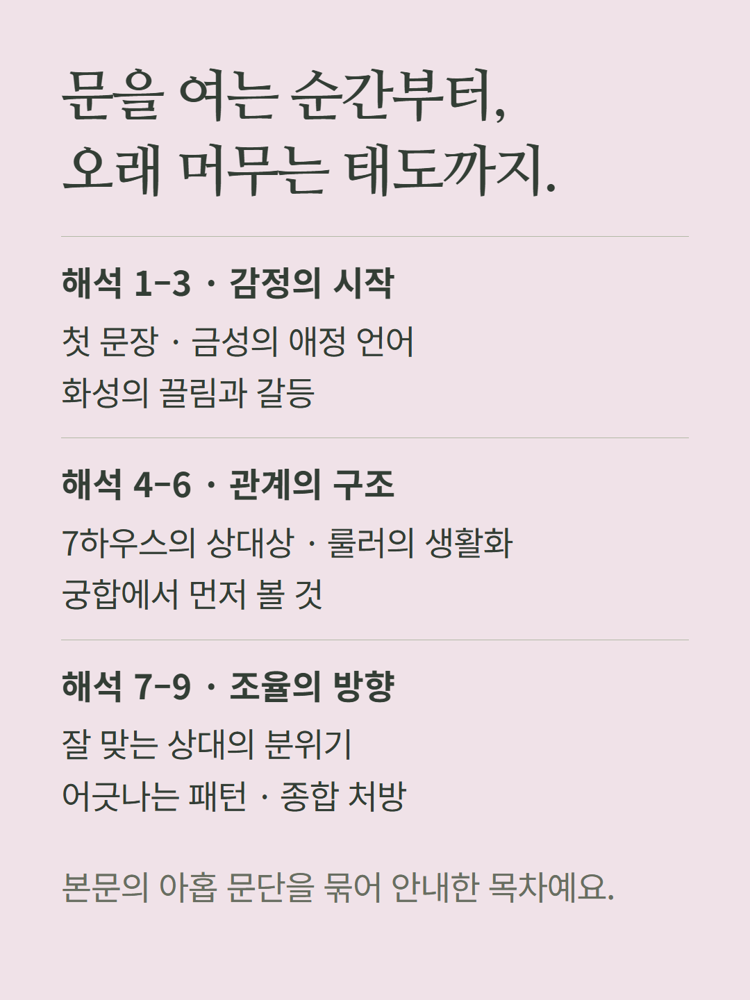
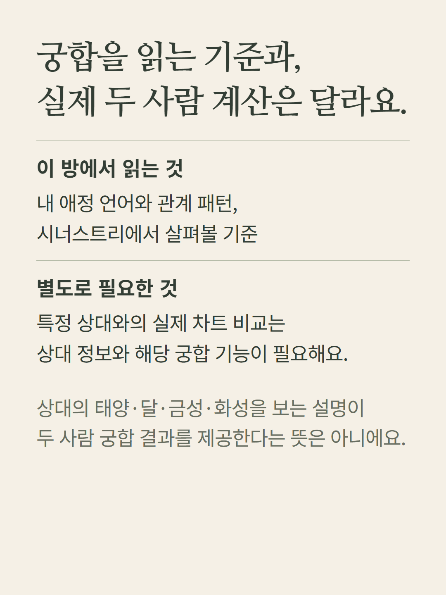
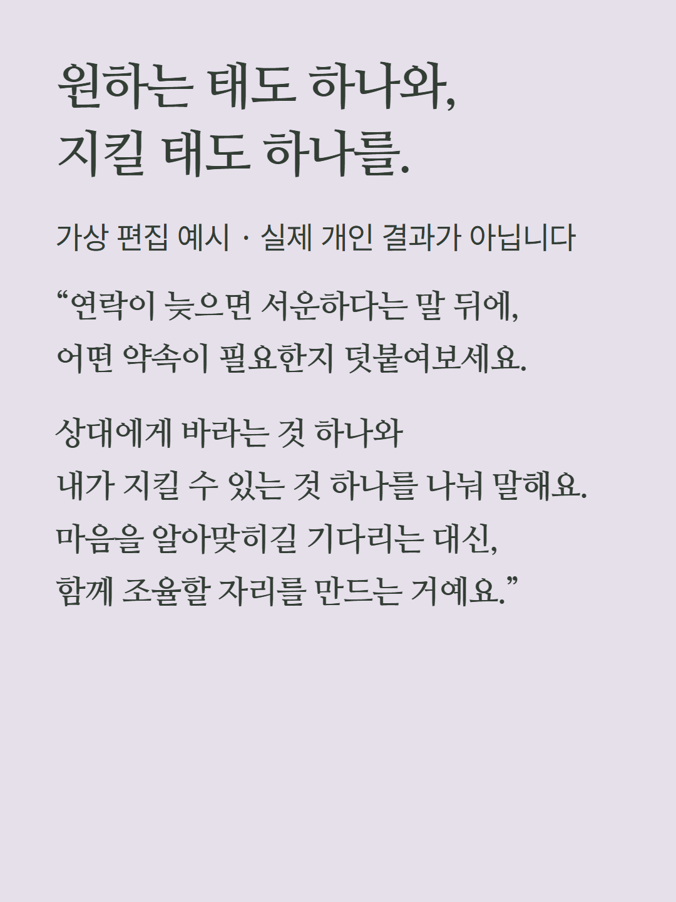
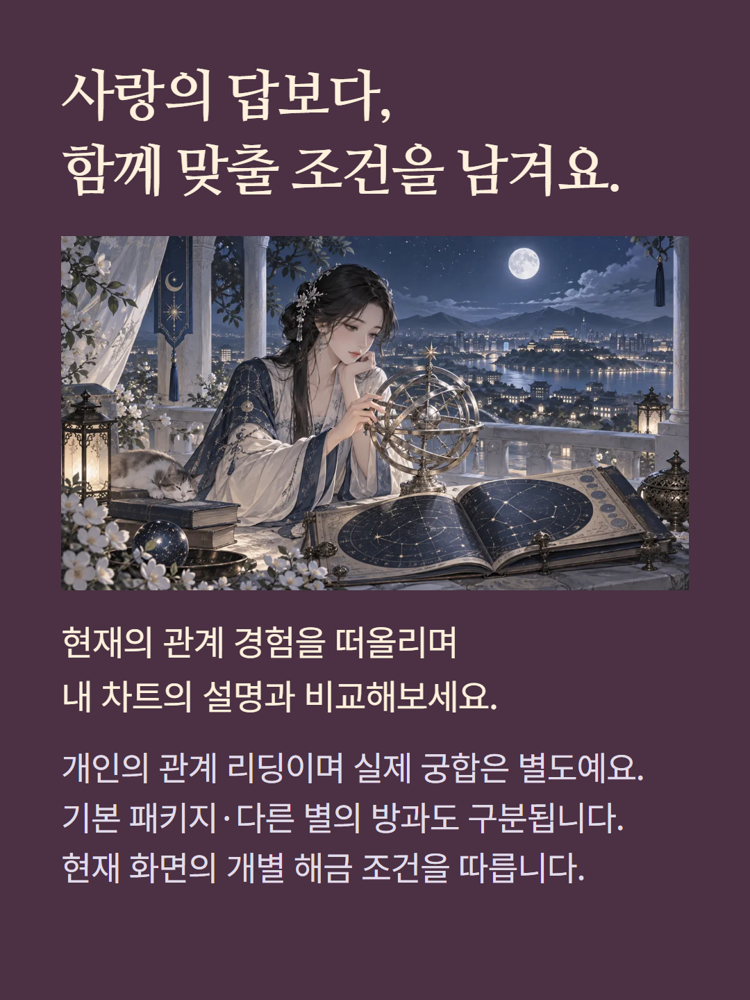

본인의 출생차트로 애정 언어·끌림·관계 패턴과 생활 약속을 읽는 개별 해금 항목입니다. 금성·화성·7하우스·7하우스 룰러를 사용합니다. 아홉 문단의 해석과 관계 포인트를 제공하며, 시너스트리에서 살펴볼 기준도 설명합니다. 상대 정보로 계산한 실제 두 사람 궁합이나 속마음 결과가 포함된다는 뜻은 아닙니다. 출생시간·지역이 하우스 해석에 영향을 줍니다. 예시는 가상 편집이며 기존 가격·해금 정책을 따릅니다.